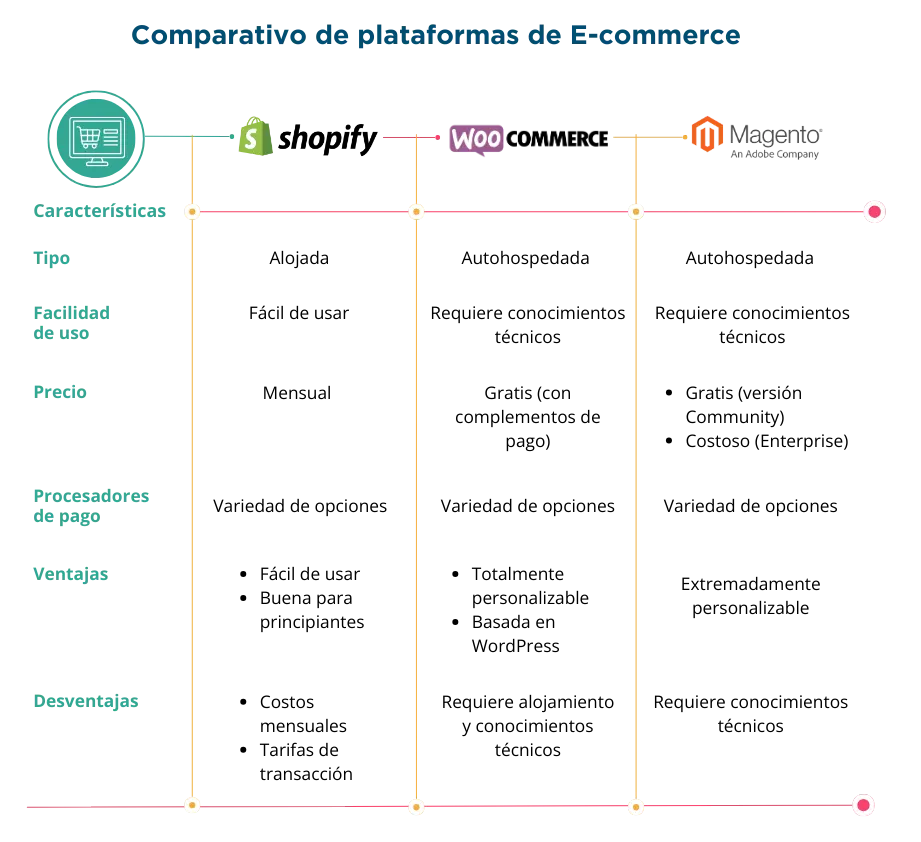
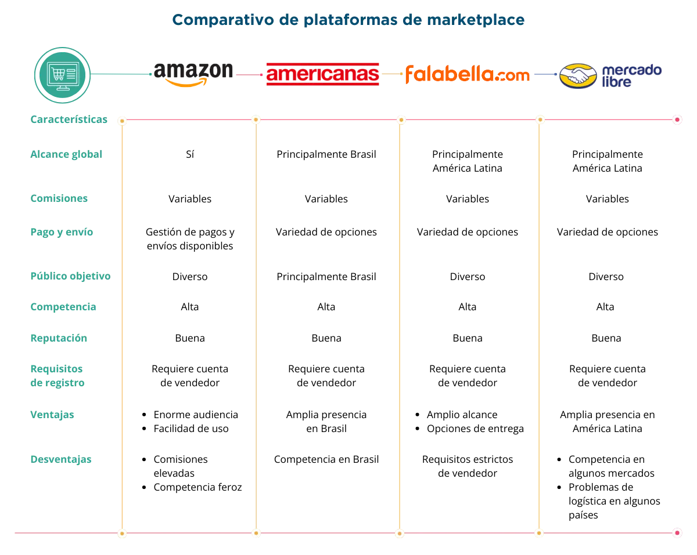
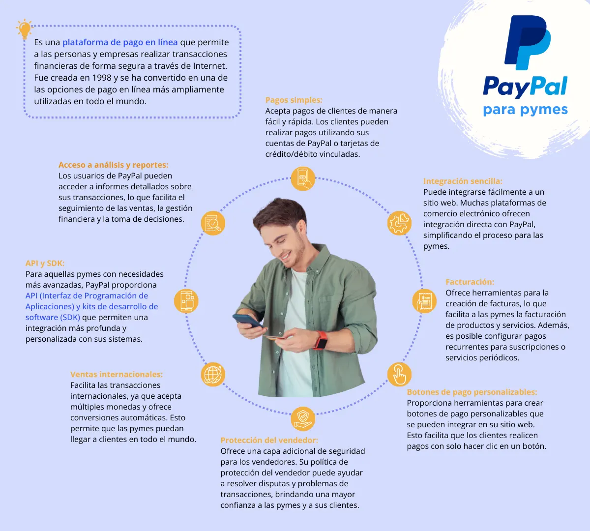

El uso de medios digitales de pago en las pequeñas y medianas empresas es una tendencia en constante crecimiento en los últimos años. Conforme la tecnología avanza, crece la importancia y los beneficios de utilizar medios digitales de pago, así como los desafíos y consideraciones clave para su implementación.
La tecnología ha revolucionado la forma en que las empresas operan. La adopción de medios digitales de pago es esencial para que las empresas puedan transformarse en pro de su competitividad. Estos medios de pago incluyen tarjetas de crédito, débito, transferencias electrónicas, billeteras digitales y criptomonedas, entre otros.
Al utilizar estos métodos, las pymes pueden simplificar sus procesos de pago, aumentar la eficiencia y brindar una experiencia más conveniente a sus clientes, además, uno de los beneficios más destacados es la agilidad en las transacciones. Los pagos en efectivo y los cheques pueden ser lentos y engorrosos, requiriendo un seguimiento y una mayor gestión.
Los medios digitales de pago permiten transacciones instantáneas y facilitan la gestión de registros financieros. Esto no solo ahorra tiempo, sino que también reduce el riesgo de errores humanos en el proceso.
Además, el uso de medios digitales de pago brinda una mayor seguridad. Las transacciones electrónicas suelen estar respaldadas por medidas de seguridad robustas, como la autenticación de dos factores, lo que protege a las pymes y a sus clientes de fraudes y robos. La eliminación del manejo de efectivo y cheques también reduce el riesgo de pérdida o robo de fondos en las instalaciones de la empresa.
La aceptación de medios digitales de pago puede ayudar a las pymes a expandir su base de clientes. Cada vez más consumidores prefieren realizar transacciones electrónicas, ya que son más convenientes y seguras. Al ofrecer una variedad de opciones de pago, es posible atraer a un público más amplio y satisfacer las necesidades de diferentes segmentos de mercado.
Los sistemas de medios digitales de pago generan registros electrónicos que facilitan la contabilidad y la presentación de informes financieros.
Sin embargo, la implementación de medios digitales de pago en las pymes no está exenta de desafíos. Uno de los principales desafíos es la inversión inicial requerida para adquirir y configurar los sistemas de pago electrónicos. Esto puede incluir la compra de equipos, software y capacitación del personal.
Además, la seguridad cibernética es una preocupación constante en el mundo de los medios digitales de pago. Es importante que las empresas garanticen que sus sistemas estén actualizados y protegidos contra amenazas cibernéticas.
La introducción de medios digitales de pago en las pymes es una tendencia crucial en la actualidad, a pesar de los desafíos iniciales, la inversión en estos sistemas se convierte en un retorno significativo a largo plazo. Las pymes que adoptan medios digitales de pago están mejor posicionadas para competir en un mercado en constante evolución y satisfacer las expectativas de sus clientes.
Los medios de pago digitales hacen referencia a los distintos métodos que una empresa adopta para recibir pagos por la prestación de productos y servicios. Esos medios digitales evitan o reducen el uso de dinero en efectivo y pagos a través de cheques, lo cual contribuye al incremento en la demanda de productos y servicios y mejora la experiencia del cliente.
Concretamente, los medios digitales de pago aluden a las transacciones económicas que se realizan por Internet a través de aplicaciones o plataformas web diseñadas para ofrecer estos servicios mediante dispositivos con conexión a Internet.
Un ecosistema digital de pagos implica contar con la infraestructura tecnológica que permita a las personas y a las empresas realizar transacciones financieras de manera electrónica, en lugar de depender exclusivamente de transacciones en efectivo o cheques físicos.
Estos sistemas utilizan tecnología digital para facilitar pagos, transferencias de dinero y otras transacciones financieras de manera más eficiente y segura, a través de diferentes medios que llegan a diferentes sectores y permiten a las empresas ampliar sus segmentos comerciales.
El ecosistema digital en el entorno de las pequeñas y medianas empresas está compuesto por una variedad de participantes que ofrecen servicios y soluciones adaptadas a las necesidades propias de cada empresa. A continuación, se describen algunos de los participantes clave en este ecosistema:
Pymes: Las pequeñas y medianas empresas son participantes fundamentales en el ecosistema. Cada vez más utilizan soluciones digitales para gestionar sus operaciones, incluyendo la administración financiera, el comercio electrónico, la gestión de inventario y la interacción con los clientes.
De acuerdo con un estudio realizado en conjunto por Americas Market Intelligence (AMI) y Mastercad (Molina, 2023) el 92% de las pymes en América Latina reportan que están aceptando algún tipo de pago digital.
Plataformas de comercio electrónico: Son herramientas informáticas que permiten la creación de una tienda en línea, a través de la cual es posible generar experiencias de compra y utilizar mecanismos de pagos digitales, algunos ejemplos incluyen Shopify, WooCommerce o Magento, por citar algunas.
A continuación, se presenta un cuadro comparativo entre ellas: (Anilu, 2020)
Mercados en línea y marketplaces: Son plataformas digitales que funcionan como espacios comerciales virtuales, siendo un espacio propicio entre intermediarios, compradores y vendedores, facilitando las transacciones financieras y la logística de entrega; este tipo de plataformas permiten a las pymes listar y vender sus productos en línea a una audiencia más global. Entre los ejemplos más conocidos están Amazon, Americanas, Falabella y Mercado Libre (Rodriguez, 2023).
Organismos gubernamentales y reguladores: Entidades gubernamentales y reguladores que establecen políticas y regulaciones relacionadas con el entorno digital de las pymes, así como programas de apoyo y financiamiento.
Asociaciones comerciales y cámaras de comercio: Organizaciones que brindan apoyo, recursos y redes de contactos a las pymes, y que a menudo promueven la adopción de tecnologías digitales.
Clientes y consumidores: Los clientes y consumidores que interactúan con las pymes en línea, realizando compras a través de sitios web, aplicaciones móviles y otras plataformas digitales.
Este ecosistema digital es fundamental para el éxito y la eficiencia de las pymes en un entorno cada vez más digitalizado. La colaboración entre estos participantes permite a las empresas pequeñas y medianas, acceder a tecnología, recursos financieros y mercados en línea, lo que puede impulsar su crecimiento y competitividad.
El ecosistema digital de pagos es un componente vital en la sociedad moderna, que ha experimentado una rápida evolución en los últimos años. Los avances tecnológicos han revolucionado la forma en que se realizan las transacciones financieras y han dado lugar a una amplia variedad de métodos de pago, a continuación, se presentan los más relevantes:
Tarjetas de Débito
Las tarjetas de débito son uno de los métodos de pago más comunes. Estas tarjetas están vinculadas directamente a una cuenta bancaria y permiten a los titulares realizar compras electrónicas, retiros de efectivo en cajeros automáticos y pagos en línea. Las tarjetas de débito son una opción segura y conveniente para realizar transacciones diarias, ya que limitan el gasto al saldo disponible en la cuenta bancaria del titular (Santader, 2020).
Tarjetas de Crédito
Las tarjetas de crédito a diferencia de las de débito, son instrumentos que permiten a los usuarios gastar o adquirir compromisos financieros hasta un límite predeterminado de crédito, que luego deben pagar en forma de cuotas mensuales o en su totalidad de acuerdo con lo solicitado en su estado de cuenta. Estas tarjetas son ampliamente aceptadas en todo el mundo y son ideales para compras en línea y reservas de viajes (Santader, 2020).
Monedero electrónico o tarjeta prepagada
Los monederos electrónicos, también conocidos como tarjetas prepagadas, son una opción de pago popular en el ecosistema digital. Estas tarjetas se cargan con una cantidad fija de dinero y pueden utilizarse para realizar compras en línea o en tiendas físicas. Son ideales para quienes desean controlar sus gastos y no desean vincular una cuenta bancaria directamente (Acevedo, 2023).
Pago bancario referido
El pago bancario referido es un método que involucra a un banco o entidad financiera como intermediario en una transacción. En lugar de transferir dinero directamente a la parte receptora, el remitente inicia el pago a través de su banco, que luego facilita la transferencia de fondos al beneficiario. Este método es ampliamente utilizado en transacciones internacionales, ya que proporciona una capa adicional de seguridad y verifica la identidad de las partes involucradas.
Efectivo
A pesar de la creciente digitalización de los pagos, el efectivo todavía desempeña un papel importante en el ecosistema de pagos, especialmente en transacciones de pago contra entrega. En este escenario, el comprador paga en efectivo al recibir el producto o servicio. Esto es común en la entrega de alimentos, servicios de mensajería y otros casos en los que el pago electrónico puede no ser factible o conveniente.
Tiendas de Conveniencia
Las tiendas de conveniencia han evolucionado en su capacidad para ofrecer soluciones de pago digital. Los consumidores pueden comprar y pagar por una amplia gama de productos y servicios en estas tiendas, incluyendo recargas de teléfono móvil, boletos de transporte público, pago de facturas y más. Esto ha simplificado la vida de los consumidores al proporcionar un lugar centralizado para múltiples transacciones.
Wallets o monederos móviles
Las wallets o billeteras digitales son aplicaciones que permiten a los usuarios almacenar de forma segura información financiera y realizar transacciones en línea. Los monederos móviles están directamente vinculados a aplicaciones que permiten almacenar dinero virtual y pagar con el teléfono móvil, como Apple Pay o Samsung Pay, Google Pay. Estas billeteras digitales se han vuelto esenciales en un mundo cada vez más impulsado por los dispositivos móviles, ya que permiten a los usuarios realizar pagos sin necesidad de llevar efectivo o tarjetas físicas. (Agencia de gobierno electronico y sociedad de la informacion y conocimiento, 2021).
Pasarelas de pago en línea:
Son plataformas tecnológicas que facilitan las transacciones financieras entre un comprador y un vendedor a través de Internet. Su función principal está en autorizar y procesar los pagos en línea de una manera segura y eficiente.
Cumplen la función de intermediarios que gestionan la transferencia de pagos entre el vendedor, el comprador y las instituciones financieras involucradas en la transacción. Ejemplos muy concretos son Paypal y Stripe.
Como se puede apreciar en los cuadros precedentes, las pymes pueden obtener múltiples ventajas de las pasarelas de pago digital, pero es esencial que realicen una evaluación completa de las opciones y ver si éstas satisfacen las necesidades específicas de la pyme y los objetivos estratégicos que desean cumplir.
Stripe y PayPal son dos pasarelas de pago en línea muy conocidas, a continuación, las características más relevantes de cada una:
PayPal: Es una plataforma de pago en línea que permite a las personas y empresas realizar transacciones financieras de forma segura a través de Internet. Fue creada en 1998 y se ha convertido en una de las opciones de pago en línea más ampliamente utilizadas en todo el mundo.
Sugerimos ver este video dirigido a usuarios https://www.youtube.com/watch?v=wk5CFcz1a60
Codi (Código de pago)
Codi o código QR es un sistema de pago digital que se ha vuelto muy popular en algunos países como México. Permite a los usuarios realizar pagos y transferencias de dinero utilizando un código QR único. Los comerciantes muestran su código QR y los clientes escanean este código con la aplicación para realizar la transacción. Es una forma rápida y segura de realizar pagos en persona. (Santader, 2020)
Criptomonedas
Las criptomonedas, como Bitcoin y Ethereum, han revolucionado el mundo de los pagos digitales. Estas monedas digitales funcionan en una tecnología llamada blockchain, que garantiza la seguridad y la descentralización. Las criptomonedas permiten transacciones rápidas y seguras a nivel internacional, sin la necesidad de intermediarios financieros. A medida que las criptomonedas continúan ganando aceptación, su uso en el ecosistema de pagos digitales se expande (Chuen, 2017). El uso de criptomonedas atrae a un segmento de clientes más orientado al uso de la tecnología.
Con el desarrollo de los pagos digitales, también han surgido nuevos desafíos en términos de seguridad y fraude. La detección y prevención de fraudes en este entorno es fundamental para garantizar la confianza de los consumidores y la integridad de los sistemas de pago.
Algunas herramientas que facilitan la detección y prevención de fraudes son:
Inteligencia artificial y aprendizaje automático
La inteligencia artificial (IA) y el aprendizaje automático son tecnologías que han revolucionado la detección y prevención de fraudes en el mundo de los pagos digitales. Estas tecnologías se basan en la capacidad de las máquinas para aprender y adaptarse automáticamente a partir de datos y experiencias anteriores. En el contexto de la seguridad de pagos digitales, las aplicaciones de la IA y el aprendizaje automático son fundamentales de las siguientes maneras: (Embat, 2023)
Autenticación Multifactor (MFA)
La autenticación multifactor (MFA por sus siglas en inglés) es un enfoque que se basa en el uso de múltiples métodos de verificación de la identidad del usuario. Estos métodos pueden incluir lo siguiente:
La MFA agrega una capa adicional de seguridad porque un atacante tendría que superar múltiples obstáculos para acceder a una cuenta o realizar una transacción. La MFA es esencial en el ecosistema de pagos digitales porque aborda uno de los desafíos más comunes, que es el robo de credenciales de acceso. Incluso si un atacante obtiene la contraseña de un usuario, aún tendría que superar otros métodos de autenticación para completar una transacción. (Colaborador de TechTarget, 2023)
Entre las ventajas de la autenticación multifactor están el ofrecer mayor seguridad, al añadir capas adicionales al proceso de compraventa, hace más difícil a los atacantes comprometer una cuenta.
Ofrece protección a contraseñas débiles, además de cumplir con muchos estándares de seguridad y requisitos normativos, especialmente en servicios financieros y de salud.
Es flexible, puede adaptarse a las preferencias y necesidades de los usuarios, permitiendo diferentes combinaciones de factores de autenticación.
Análisis de comportamiento del usuario
El análisis de comportamiento del usuario es una tendencia en la detección de fraudes que se centra en evaluar el comportamiento típico de los usuarios durante las transacciones y en su actividad en línea en general. Algunos aspectos clave de esta técnica son: (Contacto de Union Empresarial, 2023)
El análisis de comportamiento del usuario es especialmente eficaz cuando se combina con otras técnicas, como la MFA y la detección de patrones de fraude mediante el aprendizaje automático.
Biometría y reconocimiento facial
La biometría se refiere al uso de características únicas del cuerpo humano, como el reconocimiento facial, la huella dactilar, lectura de iris y el reconocimiento de voz, para verificar la identidad de un individuo. El reconocimiento facial y la biometría en general se han convertido en tecnologías populares en el ecosistema de pagos digitales debido a su capacidad para mejorar la seguridad y la comodidad (Mohamad El-Abed, 2015). Algunos aspectos clave de esta tendencia son:
Reconocimiento facial: Permite a los usuarios autenticarse a través de la cámara de su dispositivo móvil o una cámara web. La tecnología compara la imagen facial capturada con datos biométricos previamente registrados para verificar la identidad del usuario.
Falsificación difícil: La biometría es difícil de falsificar, lo que la hace efectiva en la prevención de fraudes. Las características biométricas son únicas para cada individuo.
Comodidad del usuario: Los usuarios encuentran la autenticación biométrica rápida y conveniente, lo que puede aumentar la adopción de soluciones de pago digital.
Sin embargo, es importante tomar medidas de almacenamiento y protección sobre los datos relacionadas con la biometría y el reconocimiento facial.
Blockchain y Criptomonedas
Blockchain (cadena de bloques) es una tecnología descentralizada que forma la base de las criptomonedas como Bitcoin. En el contexto de la prevención de fraudes en pagos digitales, la blockchain y las criptomonedas tienen varias implicaciones importantes:
Es importante destacar que las criptomonedas también han sido objeto de diversos tipos de fraudes, incluyendo estafas de inversión, ataques de doble gasto y robos de carteras digitales. Por lo tanto, aunque la blockchain aporta seguridad a las transacciones digitales, también presenta nuevos desafíos en términos de seguridad y prevención de fraudes (Chuen, 2017).
Aunque esta tecnología blockchain brinda una capa adicional de seguridad, es esencial adoptar un enfoque integral que combine tecnología avanzada con prácticas de seguridad más sólidas, ello requiere una vigilancia permanente y una respuesta proactiva a las amenazas emergentes.
La detección y prevención de fraudes en el ecosistema digital de pagos son críticas debido a la importancia de las transacciones en línea y la creciente sofisticación de los defraudadores. Estas medidas son necesarias y altamente relevantes por varias razones:
Protección de los usuarios y clientes
La seguridad de los pagos digitales es fundamental para proteger a los usuarios y clientes. Los fraudes pueden tener un impacto devastador en las finanzas personales de los consumidores y comerciantes. La pérdida de fondos, el robo de identidad y otros tipos de fraude pueden dejar a los individuos en una posición vulnerable. La implementación de medidas sólidas de detección y prevención de fraudes es esencial para salvaguardar la confianza y la seguridad de los usuarios.
Salvaguarda de la integridad del sistema de pagos
La integridad del sistema de pagos es crucial para mantener la confianza en la economía y el comercio digital. Si los fraudes se vuelven generalizados y no se toman medidas efectivas para prevenirlos, se socava la confianza en el sistema de pagos. Los usuarios pueden volverse reacios a realizar transacciones en línea o a utilizar servicios de pago digital si perciben que hay un alto riesgo de fraude. Esto puede afectar negativamente a las empresas y la economía en general.
Evitar pérdidas económicas
Los fraudes en pagos digitales pueden tener un costo significativo para las empresas y las instituciones financieras. Las pérdidas económicas pueden derivarse de transacciones fraudulentas, devoluciones de cargos, reclamaciones de seguros y otros tipos de fraude. La implementación de medidas efectivas de detección y prevención de fraudes ayuda a evitar estas pérdidas y a mantener la salud financiera de las organizaciones.
Cumplimiento normativo
Las empresas y las instituciones financieras a menudo están sujetas a regulaciones y leyes que requieren la implementación de medidas de seguridad adecuadas. Cumplir con estas regulaciones es esencial para evitar sanciones y multas legales. La detección y prevención de fraudes son componentes clave de estos requisitos regulatorios, lo que subraya su importancia en el entorno de los pagos digitales.
Minimizar el Riesgo Operativo
El riesgo operativo, que incluye el riesgo de pérdidas financieras debido a errores humanos o fraudes, es un factor importante para las empresas y las instituciones financieras. La detección y prevención de fraudes ayudan a minimizar este riesgo, lo que contribuye a la estabilidad y la sostenibilidad de las operaciones.
Adaptación a las tácticas de fraude en evolución
Los defraudadores constantemente desarrollan nuevas tácticas y estrategias para eludir las medidas de seguridad existentes. Por lo tanto, es fundamental contar con sistemas y tecnologías que puedan adaptarse y evolucionar para enfrentar las amenazas emergentes. La inteligencia artificial y el aprendizaje automático, por ejemplo, son vitales para mantenerse al día con las tácticas de fraude en constante cambio.
Comodidad y adopción del usuario
La comodidad es un factor importante en la adopción de servicios de pagos digitales. La implementación de medidas de seguridad sólidas, como la autenticación multifactor y la biometría, puede proporcionar un nivel adecuado de seguridad sin comprometer la comodidad del usuario. Esto fomenta la adopción de servicios de pago digital y mejora la experiencia del usuario.
En resumen, la detección y prevención de fraudes en el ecosistema digital de pagos son esenciales para proteger a los usuarios, salvaguardar la integridad del sistema de pagos, evitar pérdidas económicas, cumplir con las regulaciones, minimizar el riesgo operativo, adaptarse a las amenazas en constante evolución y garantizar la comodidad del usuario. Estas medidas son fundamentales para mantener la seguridad y la confianza en las transacciones en línea y la economía digital en su conjunto.
Identificar las necesidades y objetivos específicos para la implementación de pagos digitales. Habrá que analizar el tipo de negocio y determine qué soluciones de pago digital son más adecuadas. Considere las preferencias de sus clientes y las características específicas de su industria. Es básico definir las características o requisitos de los clientes.
Es conveniente responder a las siguientes interrogantes ¿Se desea mejorar la velocidad de las transacciones, reducir los costos de procesamiento, aumentar la satisfacción del cliente o ampliar el alcance?
Investigar, evaluar y seleccionar las soluciones de pagos digitales que se adapten de mejor a las necesidades. Habría que investigar las diferentes plataformas de pago en línea, pasarelas de pago y aplicaciones de pago móvil. Considerar aspectos como tarifas, facilidad de integración, características ofrecidas y compatibilidad con su tipo de negocio.
Crear en un banco o una institución financiera una cuenta para gestionar y recibir pagos. Registrarse en la plataforma de pago seleccionar y completar los procesos de verificación solicitados por la plataforma seleccionada.
Si se tiene un negocio físico, hay que configurar el sistema punto de venta (POS) para aceptar pagos digitales. Si ya opera en línea, habrá que integrar la pasarela de pago en un sitio web o plataforma de comercio electrónico. Lo importante es generar las condiciones para que los sistemas de ventas y pagos estén conectados, sean compatibles y que las funciones se realicen de forma sincronizada.
Es indispensable proporcionar capacitación al personal sobre cómo utilizar y aceptar los pagos de los nuevos medios digitales. Se deben formar y capacitar a los elementos clave de la empresa para utilizar las nuevas soluciones de pagos digitales, asegurando que comprendan los procesos y los protocolos de seguridad. Esto es crucial para garantizar una transición suave y brindar un servicio eficiente.
La seguridad es fundamental en los pagos digitales. Habrá que asegurarse de cumplir con las regulaciones de seguridad y privacidad, como el cumplimiento del estándar PCI DSS (Payment Card Industry Data Security Standard). Esto es esencial para proteger los datos sensibles de los clientes. Contar con medidas de seguridad sólidas permitirá proteger la información financiera de los clientes y de la empresa.
Es recomendable proporcionar a los clientes diversas opciones de pago digital y en efectivo. Para ello se sugiere obtener comentarios de los clientes sobre la experiencia del pago digital. Esto puede ayudar a identificar áreas de mejora y asegurar una experiencia positiva para los usuarios.
Realizar un seguimiento constante de las transacciones y buscar formas de optimizar los procesos de pagos digitales, permitiendo la reducción de costos y mejorar la eficiencia. Además, hay que prepararse para adaptarse a los cambios. A medida que evolucionan las tecnologías y cambian las necesidades del negocio es importante actualizar los sistemas y mejorar la seguridad de las transacciones.
Es importante cumplir con todas las regulaciones y requisitos legales relacionados con los pagos digitales. Identificar la normatividad aplicable en el país y la región. Es esencial para proteger las transacciones, la información de los clientes y brindar confiabilidad a los clientes.
Es indispensable asegurarse de informar a los clientes y usuarios sobre las opciones de pago. Se pueden utilizar carteles, redes sociales digitales, boletines informativos, volantes, correos electrónicos y otros canales para destacar la adopción por parte de la empresa de los medios digitales de pago, además de destacar las ventajas de uso de estos sistemas.
Acevedo, E. (2023). Guía práctica sobre los pagos digitales: qué son, tipos y beneficios. Tiendanube. Recuperado de https://www.tiendanube.com/mx/blog/pagos-digitales/
Agencia de Gobierno Electrónico y Sociedad de la Informacion y Conocimiento. (2021). Medios de pago. Recuperado de https://www.gub.uy/agencia-gobierno-electronico-sociedad-informacion-conocimiento/comunicacion/publicaciones/medios-pago
Anilu-Platzi. (2020). 7 plataformas de comercio electrónico para tu negocio en 2021. Recuperado de https://platzi.com/blog/plataformas-comercio-electronico/?gclid=Cj0KCQjw4vKpBhCZARIsAOKHoWQtcOS4TCZjWuGdc1lRNrjDA45ulWLlDsHrokDVfpp4rtvsu7KMhhwaAnOqEALw_wcB&gclsrc=aw.ds
AWS. (2023). ¿Qué es la ciberseguridad? Recuperado de https://aws.amazon.com/es/what-is/cybersecurity/
Bello, E. (2022). ¿Qué es ecommerce y como crear tu propio comercio electrónico? Recuperado de https://www.iebschool.com/blog/comercio-online-ecommerce/
Mendoza Castro, R. (2023). Shopify para ecommerce: Qué es y ventajas de Shopify en Blog de Semrush. Recuperado de https://es.semrush.com/blog/shopify-ecommerce-que-es/
Kuo Chuen, D. L. y Deng, R. (2017). Handbook of Blockchain, Digital Finance, and Inclusion, Volume 1: Cryptocurrency, FinTech, InsurTech, and Regulation. Academic Press. DOI https://doi.org/10.1016/C2015-0-04334-9
Colaborador de TechTarget. (2023). Autenticación multifactor o MFA. ComputerWeekly.es Recuperado de https://www.computerweekly.com/es/definicion/Autenticacion-multifactor-o-MFA
De Gracia, Oswaldo. (2022). El papel del Machine Learning en la detección de fraude. Recuperado de https://www.featurespace.com/es/newsroom/el-papel-del-machine-learning-en-la-deteccion-de-fraude/
Gil, T. - Embat. (2023). Cómo la Inteligencia artificial permite evitar fraudes financieros. Blog Embat. Recuperado de https://www.embat.io/blog/como-la-inteligencia-artificial-permite-evitar-fraudes-financieros
Jackson, B. (2023). WooCommerce vs Shopify: ¿Cuál Es Mejor para Su Tienda? Blog Kinsta. Recuperado de https://kinsta.com/es/blog/woocommerce-vs-shopify/
El-Abed, M., Lacharme, P. y Rosenberg, C. (2015). Privacy and Security Assessment of Biometric Systems. Cambridge scholar publishing. Recuperado de https://www.researchgate.net/publication/280852762_Privacy_and_Security_Assessment_of_Biometric_Systems
Molina, J. A. (2023). El 92% de las pymes en Latinoamérica acepta algún tipo de pago digital. El economista. Recuperado de https://www.eleconomista.com.mx/el-empresario/El-92-de-las-pymes-en-Latinoamerica-acepta-algun-tipo-de-pago-digital-20230612-0127.html
Rodriguez, J. (2023). Qué es un marketplace: ejemplos, tipos y cómo funcionan. Blog de Hubspot. Recuperado de https://blog.hubspot.es/sales/que-es-marketplace
Santader. (2021). Pagos digitales: ¿qué son y cuáles son los más usados?: Santander. Recuperado de https://www.santander.com/es/stories/pagos-digitales-que-son-y-cuales-son-los-mas-usados